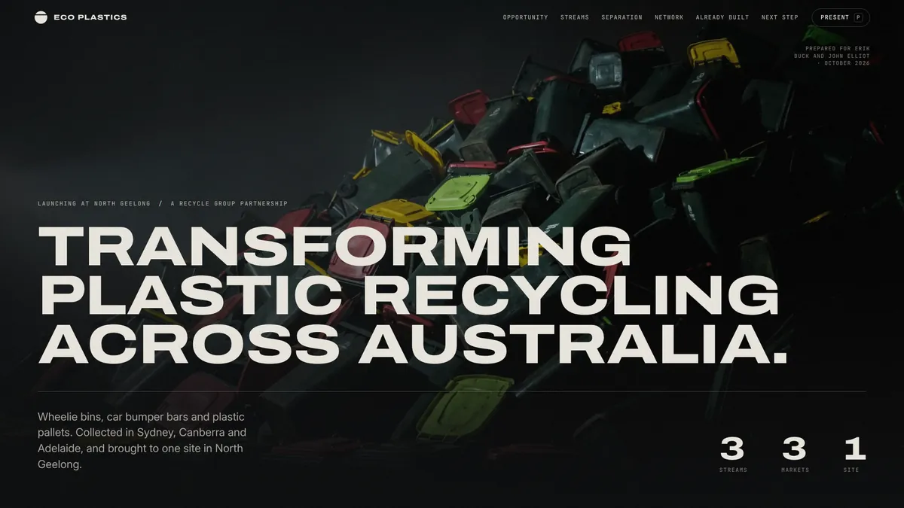
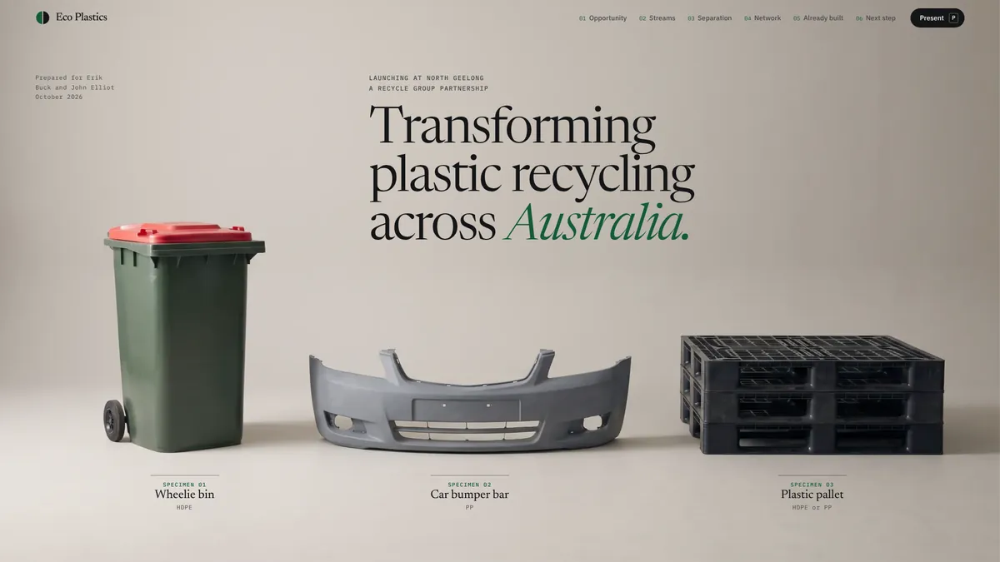

Direction ADark
Monolith
Cinematic and assertive, built for the big screen. Says: this is big, and the site it runs on is already standing.
Open direction A →
Direction BLight
Specimen
Editorial and precise, like a research prospectus. Says: we understand this material better than anyone, and we can prove it.
Open direction B →
Same facts, two looks. Press P on either page to present, then use the arrow keys or a clicker. F for full screen, Esc to exit.Unlisted preview. Hidden from search engines.